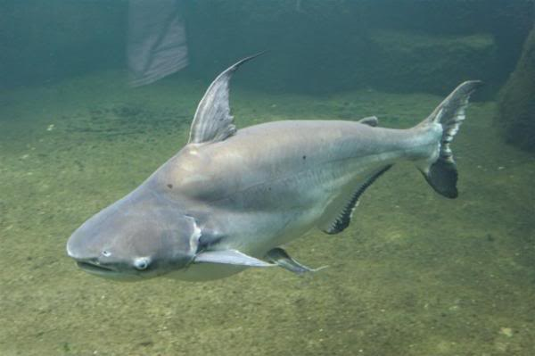

Pangasius, žralok co není žralok
Kromě jiného mě zaujala sleva na ryby. Ty já rád. Bohužel mít rád a mít na to rozpočet jsou dvě různý věci. Obzvlášť, když nejčastěji na mém talíři končí losos. Takže je doufám jasný, že jdu po jakýkoliv slevě jako slepice po drobu. Hned po rozkliknutí vyvstal první problém - je toho pět kilo propána. Nejenom, že je to porce tak pro malou vesnici, ale hlavně v našem po okraj naplněném (zmrzlinama) mrazáčku by to nebylo kam dát. Ale za tu cenu?
“Hele Davide, co na to říkáš?”, otáčím se na spolubydlu.
“Páni, pět kilo.”, odvětí zatímco prochází popis. “A co to vůbec je za rybu?”
 Pangasius v celé své kráse. Zdroj: supremeanimalfoods.co.uk
{kind=link}
Jakože mohl jsem tu hrát fakt chytrýho, že to jméno neslyším prvně a tak. Nicméně jsem radši pogooglil. První co na mě vypadlo, byl článek “Pangasius je sladkovodní ryba ze znečištěné vody”. Hmm, dobrý, říkám si, začíná to moc pěkně. Zběžně prolítnu další titulky a moc mi to na apetitu nepřidá - “Máme se bát jíst pangase? Německá ARD varuje.", “Ryba basa (pangasius) je pro vás velmi škodlivá. Nekupujte ji!" a “Je pangasius zdravý?".

Nebýt toho, že se mi zobrazil i odkaz na stránky hoax.cz (CZ), asi by bylo rozhodnuto. Mluvčí úřadů pro kontrolu potravin (Státní veterinární dozor, Státní zemědělské a potravinářské inspekce) píšou, že v podstatě o nic nejde. Rozhodl jsem se volit metodu paní přes jádro, říct, že všechno je v pořádku a věřit jim.
Paní přes jádro, zdroj: aktualne.cz
No a tak jsme se obětovali, v mrazáku udělali trochu místa a mentálně se připravili, že do konce života už nic jiného jíst nebudeme.Ryba k snídani, obědu a večeři. Jupí!
Asi po dvou dnech jsme dojedli uvařené jídlo a přišla řada na první zkušební degustaci. Z nedostatku času jsme zvolili jednoduchý postup - jen trochu podusit na pánvi, okořenit, zakápnout citrónem a přihodit cereální bagetu (jako moc se to nehodí, ale ony byly čerstvé a fakt krásně voněly). Výsledek trochu připomínal jídla ze školní jídelny. Tím bych se asi neměl moc chlubit, co?
Už po prvním soustu bylo jasný, že pangasius je něco spešl. Neříkám lepšího, ale neobvyklého určitě. Nemá kosti a na nesmrdí po rybině. Rozhodně ale nechutnal jako kuře (CZ) a jestli jo, tak jsem celý život jedl nějaký divný kuřata. Nejblíž, k čemu bych to přirovnal bylo volský oko. Na vajíčkové chuti jsme se shodli oba. Pokud nešlo o nějakou výjimku, mohl jsem si ušetřit práci a koupit si ty vejce. Vyšlo by to levnějš.
Tady bych normálně končil. S ponaučením, že je asi fakt lepší prvně koupit trochu… stravitelnější množství, než se člověk takhle utrhne ze řetězu. Pokud Vás ale zajímá, jako to je s Pangasem a “nebezpečností”, pokračujte.

Nedalo mi to a začal jsem hledat, jak to tedy je. Je to opravdu odpadní ryba, ktará se kupuje kvůli ceně? Na českém rybníčku jsem příliš ozdrojovaných článků nenašel. Jediný, který si trochu vybavuju je na vylectese.cz (CZ). Kromě bulvárního titulku mě zaujalo i to, že měl nějaký odkaz na zdroj. Každý další odkaz vedl na podobně laděný text (bulvární nadpis, stejná struktura i obsah). Po několika proklicích jsem se dostal až na cbtelevison (ESP). Zde byl jako zdroj uvedený server cambio21, kde jsem ale článek už nedohledal. Tude cesta nevede.
Většina českých článků pouze papouškuje tu stejnou informaci. Jde o vietnamskou rybu. Chová se ve špatných podmínkách. Používají špinavou vodu, kterou berou z řeky, do které tečou splašky, myjí se v ní atd. Taková vietnamská Ganga.

Dost se hraje na city, všude spousta vykřičníků, capslocku a výzev ke sdílení. Odkazy na zdroje aby člověk pohledal. Když už, cesta vede k německému dokumentu zachycujícímu “pangasí pravdu”. Co mě hodně překvapilo, byla až bulvární úroveň příspěvků (CZ) na stránkách Státní veterinární správy.
Tak jsem zkusil hledat anglicky. A ejhle, relevantní výsledky se rázem objevily. Začnu trochu nesouvisející prezentací (EN) o produkci. Data od 12. slajdu více méně potvrzují to, co se dalo dohledat na českých stránkách. Velká část produkce pochází z Vietnamu a vývoz této ryby jak do USA tak do EU (potažmo ČR) rok od roku roste.
Dál jsem narazil na výborně ozdrojovaný rozbor (EN) několika vzorků pangase. Ve třiceti případech byly do ryb přidány polyfosfáty. Mají za úkol držet v mase vodu, což se projeví na váze a vy pak kupujete mraženou vodu, která se na pánvi vypeče. Nutno podotknout, že je to plně legální (CZ). Co mi osobně přijde hroší je zvýšené množství rtuti (50% vzorků). Vyšší přítomnost amoniaku (dokonce v 80% vzorků) zase ukazuje na nezvládnutou přepravu a chlazení, protože doprovází “rozklad” masa. Na horší kvalitu masa poukazují i další hodnoty, například zvýšené množství MDA (CZ).
Poznámka: Limity některých “kontaminujících” látek lze dohledat zde (CZ)
Ještě jste tu? Tak pokračujeme.

Z další studie (EN) zabývající se obsahem tuků a minerálů v mase jsem pobral více-méně jen závěr. Co se studie samotné týče a jejího provedení, tolik jsem si z chemie na střední neodnesl. Občas narazím na zdánlivě “známý” výrazivo, ale nic si pod ním nepředstavím. Tak či tak, studie hodnotí pangase jako vhodného k jídlu a přípravě dalších odvozených potravin (např. rybí prsty, burgery atd.). Maso samo o sobě tedy špatné není.
Výsledek krásně shrnuje tato poslední studie. Zabývá se přesně tím, jaký je vztah mezi “mediálním humbukem” a reálnou škodlivostí ryby. Pokud se vám to nechce číst, autoři natočili i krátké video:
Ve zkratce: Říkají, že v pangasovi je tak malé množství škodlivých látek, že zdravý člověk ho může bez zdravotního rizika konzumovat. To, že se pangasius chová ve vodě pochybné kvality nemá na chemické složení až takový vliv, jaký mu připisují média. Pokud tedy nebudete papčit kilogramy denně, nejspíš se nic nestane. Je ale dobré myslet na to, že se, vzhledem k rizikovémů původu, může kdykoliv něco pokazit.
Tak dobrou chuť.